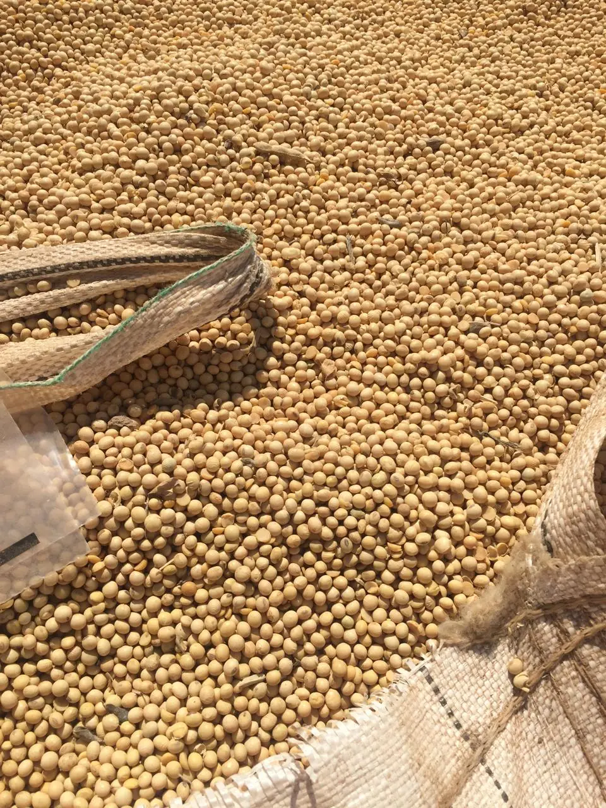
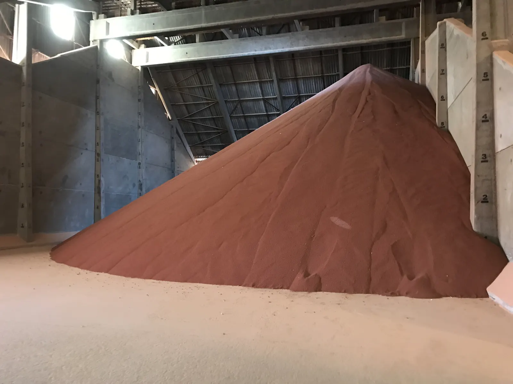
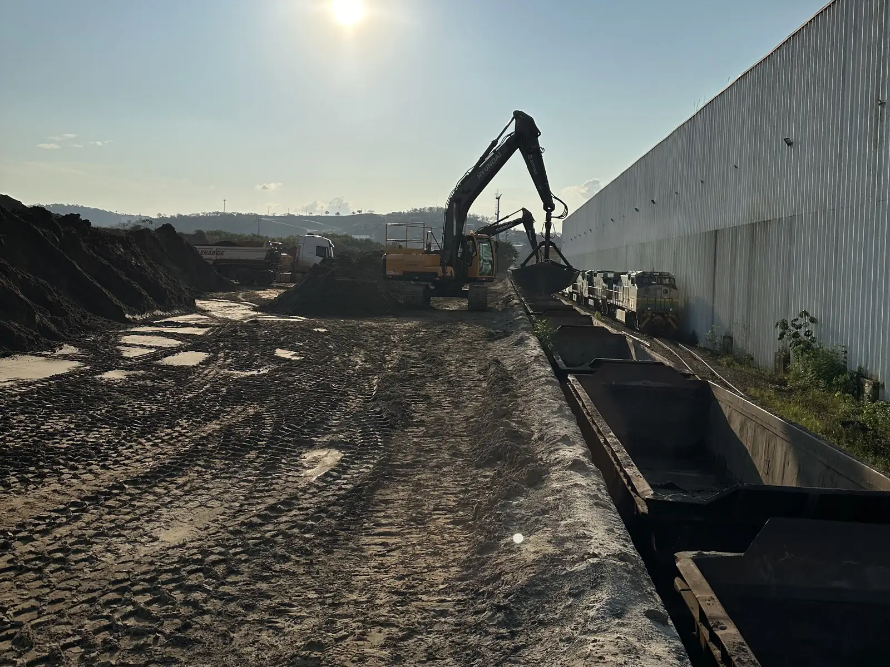
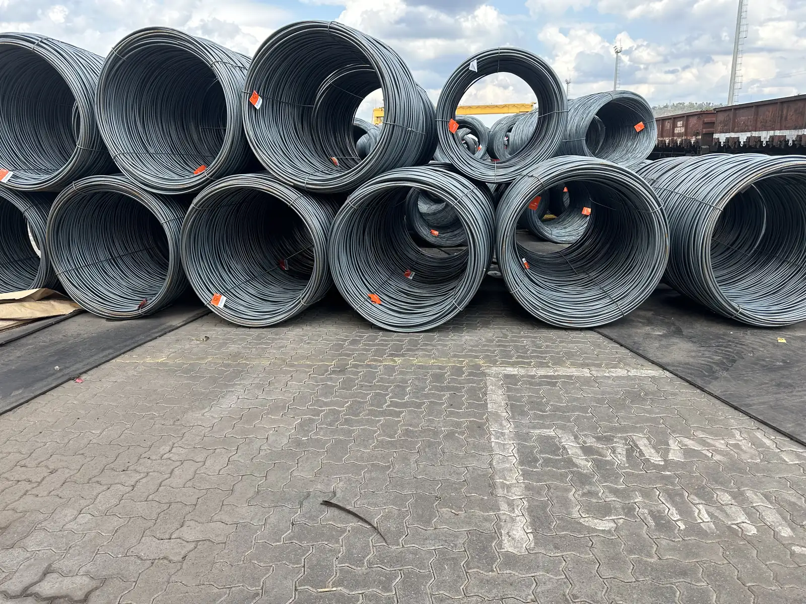

从产地到目的地
我从内部熟悉的物流通道
从卡车到船舶，从港口到货物在全球的目的地，以及货物在哪里受阻。请选择一种货物。
粮食 · 出口
- 卡车. 大豆和玉米由卡车运来：马托格罗索州、戈亚斯州和三角矿区的货物运往阿拉瓜里；巴伊亚州西部和米纳斯吉拉斯州西北部的货物运往皮拉波拉。
- 场站. 在铁路场站，粮食由卡车转运到列车。
- 列车. 经中大西洋铁路（FCA）和维多利亚-米纳斯铁路（EFVM）运至圣埃斯皮里图州的图巴朗港。
- 港口. 在图巴朗港，粮食从列车卸下并装船。
- 船舶. 大豆主要运往中国，也运往东南亚、日本和韩国。豆粕运往欧洲。
- 瓶颈所在. 瓶颈在卡车与列车的衔接处，以及港口的船舶排队。货物到得太早，会堵塞港口；到得太晚，船舶错过排队位置，要支付滞期费。 准时化（just in time）在纸面上很美，在现实中很难：只有整条供应链协同才能实现。
我的角色. 我负责阿拉瓜里和皮拉波拉场站的供应链规划：运力、预算，以及收获季与化肥的季节性。
化肥 · 进口
- 船舶. 大量尿素、大量氯化钾（KCl）、大量磷酸一铵（MAP）和少量复合肥（NPK）经海运抵达，各自来自世界不同地区。
- 港口. 在圣埃斯皮里图州的图巴朗港卸货，转运到列车。
- 列车. 经维多利亚-米纳斯铁路（EFVM）和中大西洋铁路（FCA）运往阿拉瓜里场站。
- 场站. 在阿拉瓜里，氯化钾、尿素、磷酸一铵和复合肥从列车卸下。其中一部分运往与场站相连的 EuroChem 掺混工厂。
- 卡车. 化肥再由卡车运往三角矿区和戈亚斯州的大豆和玉米农田。
- 瓶颈所在. 进口时风险正好相反：港口装车过多，会在场站形成排队；场站堵塞就无法疏运港口，导致下一艘船延误，客户还要支付仓储费。 准时化（just in time）在纸面上很美，在现实中很难：只有整条供应链协同才能实现。
我的角色. 我负责从图巴朗港到阿拉瓜里的化肥供应链规划：运力、预算，以及收获季与化肥的季节性。
生铁 · 出口
- 工厂. 马拉尼昂州和帕拉州的生铁厂，许多是家族企业，位于阿萨伊兰迪亚、马拉巴和罗萨里奥。
- 列车. 生铁经卡拉雅斯铁路（EFC）运往圣路易斯。
- 堆场. 运往伊塔基港的货物在蓬塔达马德拉堆场之前的高架卸车点卸下并存放。
- 卡车. 随后由卡车短途运输，将生铁运至伊塔基港。
- 港口. 经伊塔基港和 VLI 码头装船。
- 船舶. 目的地：主要是美国的钢厂，其次是墨西哥。
- 瓶颈所在. 瓶颈在卡车与列车的衔接处，以及港口的船舶排队。生铁到得太早，会堵塞堆场；到得太晚，船舶错过排队位置，要支付滞期费。 准时化（just in time）在纸面上很美，在现实中很难：只有整条供应链协同才能实现。
我的角色. 作为商务分析师，我在生铁厂（很多时候直接对接厂主）、铁路和港口之间牵线协调，保障了2013和2014年经圣路易斯的生铁出口。
铁路与港口：ANTT 与 ANTAQ（INFRA S.A./ONTL）。公路：OpenStreetMap（OSRM）。大豆与玉米产区：IBGE，2018年。粮食目的地与化肥来源：ComexStat，维多利亚港，2014至2021年。边界：IBGE 与 Natural Earth。海运航线为示意。
服务
单批货物或长期货流的可行性与净回值（netback）
按路线、按运费与价格情景逐段核算。您将清楚产地净回款，也就是产地可接受的最低价格，以及哪条路线值得走。
路线与运输方式研究
从成本、时间、运力和风险几个方面比较公路、铁路、沿海运输和港口，并列出决策前需要通过报价确认的事项。
物流风险分析
对单一运营商的依赖、合同运力、照付不议条款（take-or-pay）、季节性、监管政策以及交易对手的经营状况。
供应链的搭建与协调
包含路线、运力和合同的物流方案，装船计划，以及直至船舶或终端客户的货流跟踪。
为外国企业提供巴西本地支持
面向外国贸易商、买方或投资者：每一段由谁运营，货物在哪里受阻，应该找谁，签约前要核实什么。
散货与工业货物
铁矿石和锰矿，大豆、玉米和豆粕，氯化钾和尿素等化肥，生铁和钢材产品。
我经手过的货物
这些照片来自我工作过的场站和矿山。每种散货都有各自的储存、装载和外运方式。




产地价格，是扣除每一段成本之后剩下的部分
买方愿付的是基准价，减去从产地到货舱之间的全部成本。不了解每一段的人，只能在信息不足的情况下谈判。
工作步骤
- 初步沟通货物、产地、目的地、数量和时间。不收费。
- 书面范围包含什么、不包含什么、期限和费用，开始前确定。
- 交付包含成本核算、备选方案和待确认事项的报告或方案。
- 跟进可选，如果您希望由我协调执行。
我曾在企业内部规划粮食和化肥供应链：从图巴朗港出发，经维多利亚-米纳斯铁路（EFVM）和中大西洋铁路（FCA），到米纳斯吉拉斯州内陆的场站和终端客户；也规划过运往米纳斯吉拉斯州钢厂的矿石和钢材供应链。
常见问题
您只做矿石吗？
不是。我做过矿石、粮食、豆粕、化肥、生铁、钢材产品和燃料。逻辑是相同的：每一段都有成本、时间、产能和责任方。
什么是净回值（netback）？
扣除到买方为止每一段的成本之后，留给产地的部分：公路运费、铁路、场站、港口、海运费、税负和资金占用。它是矿山或农场可接受的最低价格。
您是否代为订舱、承运或操作货物？
我不是承运人，也不是货运代理。我设计供应链，比较备选方案，协调运营方，并站在货主一方跟踪各项指标。
您服务外国企业吗？
是的。对于从海外在巴西采购、销售或投资的企业，我在当地为您做现场核实和实地了解：谁运营什么，货物在哪里受阻，应该找谁。